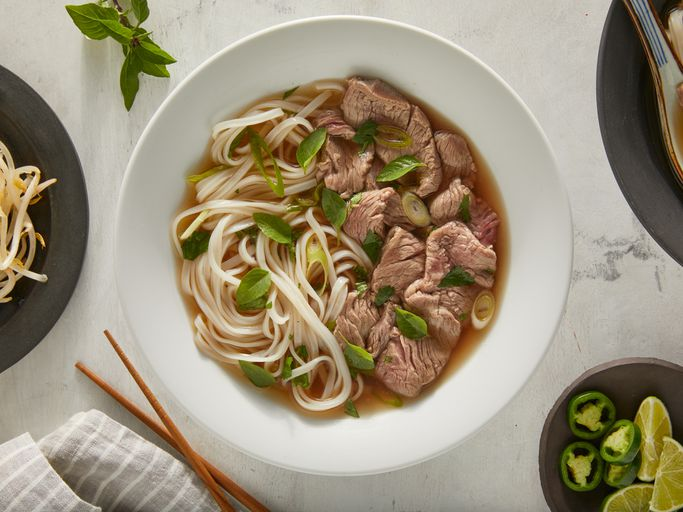

Pho

Description
Vietnamese pho is all about the broth! In this authentic recipe, beef bones, fish sauce, star anise, and ginger simmer for at least 6 hours, creating a complex, aromatic broth that may not be quick, but it's certainly delicious. The flavorful broth is ladled over rice noodles and thinly sliced beef and topped with fresh garnishes.
Pho Ingredients
Because you're making this authentic Vietnamese soup completely from scratch, the ingredient list is a little hefty. Here's what you'll need:
- Beef Soup Bones: Use the shank and knee to make the homemade bone broth.
- Rice Noodles: You should be able to find dry rice noodles at most grocery stores, either in the international aisle or another pantry aisle.
- Beef: This recipe calls for beef top sirloin. Make sure it's thinly sliced so the hot broth can cook it.
- Fish Sauce: Fish sauce will give the pho a hint of salty, fishy flavor.
- Onion: Roast the onions for an extra depth of flavor.
- Spices and Seasonings: This recipe calls for ginger, star anise, and salt.
- Garnishes: Garnish your pho with cilantro, green onion, Thai basil, lime, hoisin sauce, sriracha, or anything else you like.
How to Make Pho
Pho is quite simple to make, it's just a little time consuming. You'll find the full, detailed recipe below — but here's what you can expect when making this pho:
- Roast the beef bones and onions until the bones are browned and the onions are soft.
- Make the broth.
- Soak the rice noodles for an hour. Meanwhile, bring the broth to a simmer.
- Boi the noodles, then drain and add them to a bowl.
- Top with sirloin, cilantro, green onion, and broth. Garnish with your desired toppings.